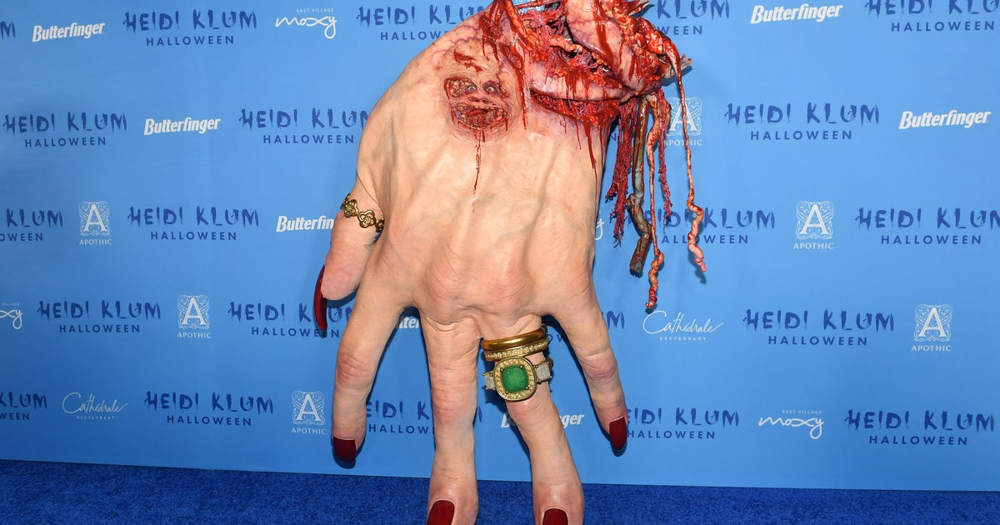
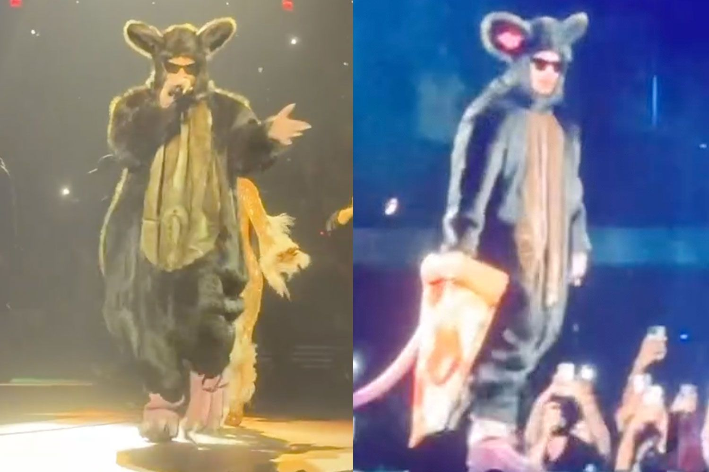
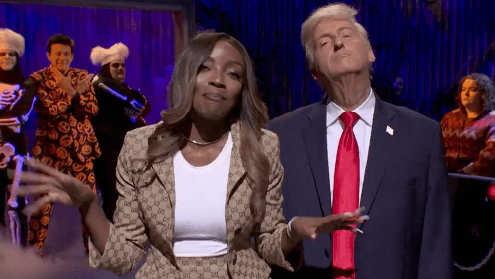

Heidi Klum becomes a giant severed hand for her 25th Halloween party

The queen of Halloween arrived at her Manhattan bash as a life-size replica of her own left hand, with only her eyes and blood-dripping mouth showing at the severed wrist and tendons dangling off the top. Her effects team scanned her real hand to recreate the red nails, palm lines, veins, her engagement ring and wedding band, and even the “Tom” tattoo on her ring finger. Helpers in blood-stained hazmat suits walked her in.
It took five to six hours to get into and “about 10 or 20 hands” to build, she joked, adding that the hardest part was carrying it. Husband Tom Kaulitz skipped the party because he’s on tour. Elsewhere at Heidiween, Neil Patrick Harris and David Burtka came as the twins from The Shining, while across the internet Zendaya recreated Halle Berry’s 2000 X-Men premiere look and Lizzo honored the late Dolly Parton.
CBS News → · Vogue on how the hand was made → · Variety red carpet →
Harry Styles ends his 30-night Madison Square Garden run as pizza rat

For the last night of his record-setting Together, Together residency, Styles strutted out in a brown furry rat suit with pink feet, sunglasses and a giant foam pizza slice, a nod to the viral subway rat video, and later stripped down to shorts and an “I am a rat” T-shirt. His band dressed as New York landmarks, and Zoë Kravitz danced in the stands in a “thank you, have a nice day” plastic-bag dress. The night before, he wore his 2010 X Factor audition outfit to sing “Isn’t She Lovely,” plus an Elvis jumpsuit.
Knicks captain Jalen Brunson presented him with a banner that now hangs in the Garden’s rafters. MSG says more than half a million fans from 79 countries came to the 30 shows, which ran three nights a week since August 26 and were his only U.S. dates this year. The tour returns in April 2027 with his first U.S. stadium shows.
David S. Pumpkins returns to SNL, and Trump crashes the ride

Tom Hanks surprised Studio 8H on Halloween night, reviving his 2016 cult character on a cheap haunted-house ride alongside Mikey Day and a returning Bobby Moynihan in skeleton suits. James Austin Johnson’s Trump then froze the scene to fret about Tuesday’s midterms and riff on his fixation with candidates’ physiques, Saidah Belo-Osagie played Nicki Minaj as his next press secretary pick, and the sketch ended with Katie Zacharia flubbing “Live from New York.”
Obsession breakout Inde Navarrette made her hosting debut, and musical guest Gracie Abrams dressed as Claire Danes’ angel-winged Juliet from Romeo + Juliet to perform “Hit the Wall” and “Here You Come, There You Go.”
 SNL cold open on YouTube →
·
SNL cold open on YouTube →
·
 Listen on Spotify →
·
Variety →
·
USA Today →
Listen on Spotify →
·
Variety →
·
USA Today →
Bottom of the news
- You Can See Everything and Clayface were still neck and neck for No. 1 on a slow Halloween box office weekend, with both around $10 million.
- Nobody Wants This star Tovah Feldshuh pushed back on Adam Brody’s Gaza comments while calling him a “beloved colleague” and denying cast tension.
- Candice Swanepoel was photographed wearing a ring on her wedding finger amid Tom Brady romance rumors.
- Jessica Lange, 77, hinted at retiring from acting, citing a lack of quality roles.
- Michael Douglas said his friend Jack Nicholson is “not working any more.”
- Under the Big Sky Fest announced a 2027 lineup led by Zach Bryan and Kacey Musgraves.
- Houdini’s centennial brought séances in Chicago and a new fight over how he died.